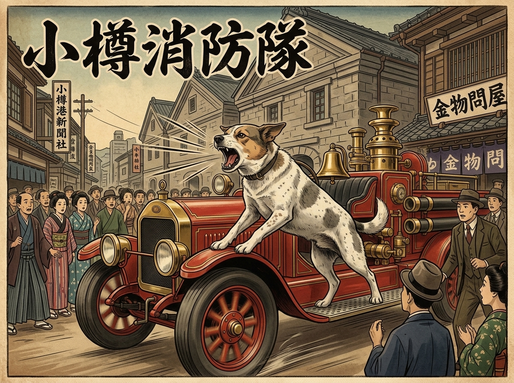
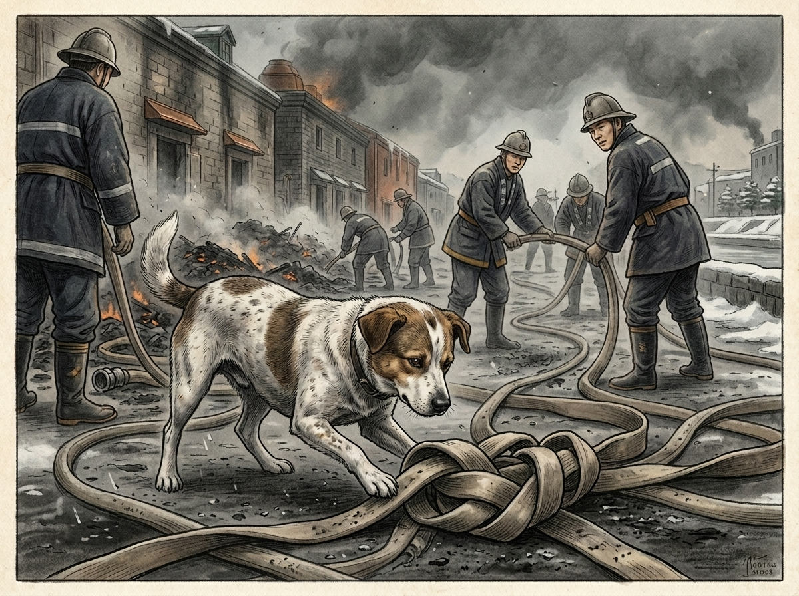
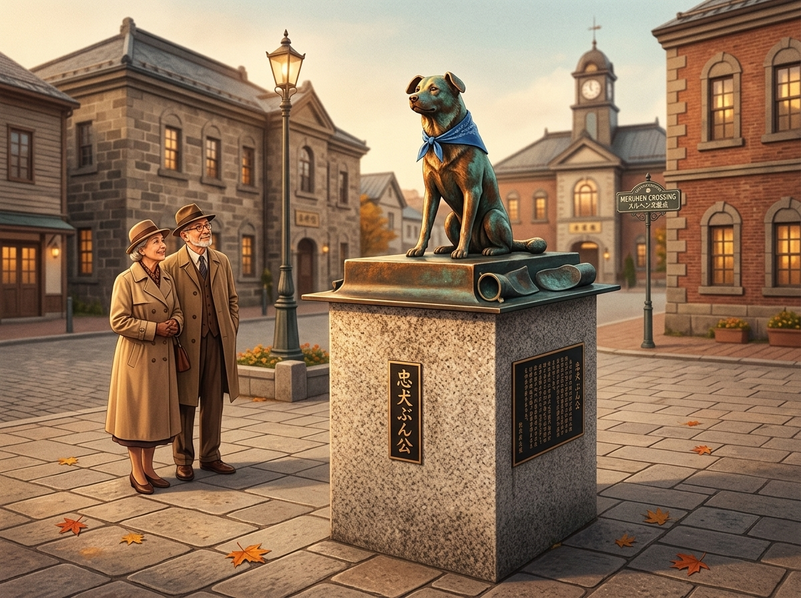

Okay, Kiri just told me about the story behind our next poster, and I have to say — I am very excited about this one. A dog. Who rode fire trucks. In actual fires. In 1920s Japan.
My tail is already standing straight up.
Let me tell you everything.
The dog who beat everyone to the truck
From around 1914 to 1938 — the Taishō era into early Shōwa — there lived a dog at the Otaru fire station (called the shōbō-gumi back then) in Hokkaido. His name was Bunkō.
Now, you might know Hachikō, the famous Akita in Tokyo who waited loyally at Shibuya Station for his owner every day for nearly ten years. Hachikō is beloved — and rightly so.
But Bunkō? Bunkō ran toward the fire.
The moment the alarm sounded, before any of the firefighters had even grabbed their gear, Bunkō was already on the running board of the fire truck — which, keep in mind, was still a genuinely unusual piece of machinery at the time. Cars were rare. People would crowd around just to look.
And Bunkō, riding that truck through the streets of Otaru, would bark at full volume to push the crowds aside and clear the road.
I mean. Can you imagine? Because I'm imagining it right now and it is the coolest thing.

Bunkō on the running board — clearing the road through Otaru's streets, faster than any firefighter could get dressed.
At the scene — and yes, that sounds scary
Once the truck arrived at the scene, Bunkō didn't wait in the vehicle.
He helped. Actively. When firefighters pulled hoses under pressure, Bunkō would work to untangle and straighten them. When bystanders crowded too close, he'd bark warnings. He knew what needed doing and he did it.
I want to be very honest here: I have thought about this, and if I were at a fire — with the smoke, the heat, the noise — I would absolutely be hiding somewhere small and soft, preferably under a blanket.
But Bunkō, after the flames were out, would move through the ash and rubble sniffing for smoldering embers that might reignite. Still working. Still useful. After all of that.
That takes a kind of steadiness I genuinely respect.

Still working, still useful — Bunkō straightening a hose beside the firefighters of Otaru.
24 years, and a whole city said goodbye
Bunkō became famous while he was still alive — covered in newspapers, mentioned on radio broadcasts, recognized across Japan. He wasn't just the fire station's dog. He was Otaru's dog.
He lived to 24 years old. For a dog, that's over 100 in human terms. A full life, by any measure.
When he passed, the city gave him a shōbō-gumi funeral — a civic ceremony — attended by crowds of local residents who came to say goodbye. That kind of farewell doesn't happen for a pet. It happens for a member of the community.
And Otaru hasn't forgotten him.
At Meruhen Crossing — the charming intersection right in front of Otaru's famous music box hall — there's a bronze monument to Bunkō. Tourists find it, locals stop by it, and people still reach out to give him a pat on the head.
Which, honestly, feels right.

Bunkō's bronze monument at Meruhen Crossing, Otaru — still keeping watch, almost a century later.
If you're heading to Otaru to walk the canal, take a small detour to Meruhen Crossing. Bunkō will be there, keeping watch the way he always did.
And if you want to bring a little piece of that story home — our art poster captures it beautifully. The kind of thing worth putting on a wall and actually looking at now and then.
Okay, I need to go help Kiri with the shop. She's giving me that "Sari, stop talking and come here" look from across the room.